Written from the LMS UAT screenshots shared by the product owner; screenshots are taken from the LMS prototype (sample data only). Status: YTS yet to start · WIP in progress – not final · Completed confirmed as done by the product owner.
Module 1 – Login
Login · Login – OTP · OTP mail
| SL.No | Screenshot | Functionality | Description | Data Points Required | Status |
|---|---|---|---|---|---|
| 1 | 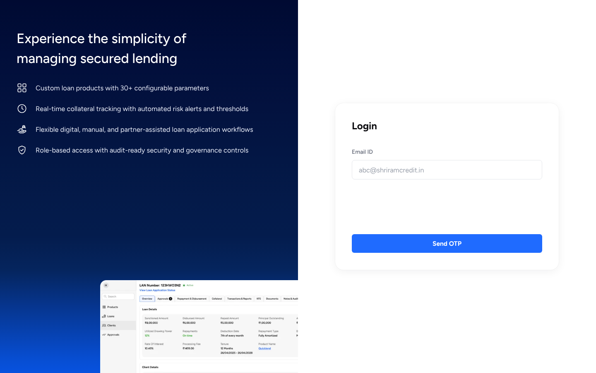 | LMS user entering the SCCL mail ID to log in | The LMS opens on the Login page: the left half shows the product message, four feature lines and a preview of the LMS; the right half shows the Login card. Only the LMS users can log in – Maker (opsmaker@shriramcredit.in), Checker (opschecker@shriramcredit.in) and Admin (azhagarsamy.s@shriramcredit.in). Screen Content:
| Email ID: opsmaker@shriramcredit.in Send OTP clicked on: DD-MMM-YYYY; HH:MM:SS | WIP |
Field Name: Email ID Field Type: Text Field Maximum Character: 120 Char Value Type: User inputs Input Value format: Mail ID ending with @shriramcredit.in (not case sensitive) Action: User enters the SCCL mail ID. Validation:
When an error is shown for this field, its border turns red. | |||||
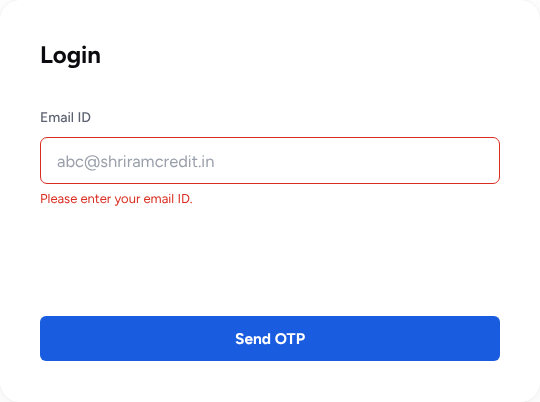 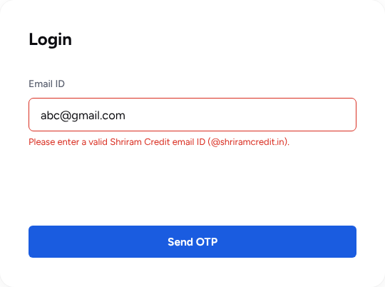 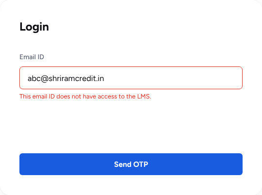 | Field Name: Validation message Field Type: Text (red, below the field) Action: Shown on Send OTP; cleared as soon as the user types again. | ||||
Field Name: Send OTP Field Type: CTA (Button) Action: Validates the mail ID; when valid, sends a 6-digit OTP to that mail ID and opens the Login – OTP screen. | |||||
| 2 | 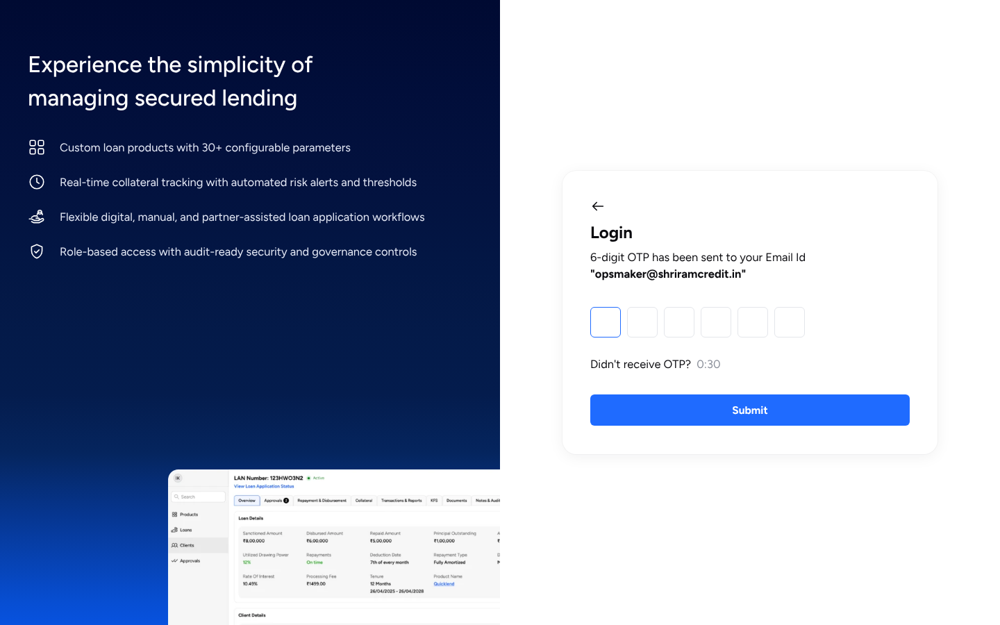 | LMS user entering the 6-digit OTP received on the mail ID | The Login card changes to the OTP step and shows the mail ID the OTP was sent to. Screen Content:
| OTP entered: 6 digit numeric OTP verified:
Logged in on: DD-MMM-YYYY; HH:MM:SS | WIP |
Field Name: ← Back Field Type: Icon Action: Returns to the Login screen. | |||||
Field Name: OTP Field Type: 6 single-digit boxes Minimum Character: 6 Maximum Character: 6 Value Type: User inputs Input Value format: Numeric only Action: Typing a digit moves to the next box; Backspace moves back; a pasted 6-digit OTP fills all boxes. | |||||
Field Name: Resend OTP Field Type: Timer, then link Action: A 30-second timer runs; then “Resend OTP” sends a new OTP and restarts the timer. Pending · LP-02 | |||||
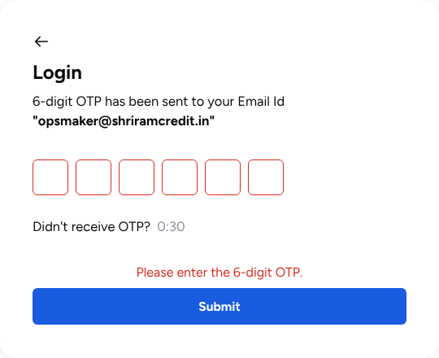 | Field Name: Submit Field Type: CTA (Button) Action: Verifies the OTP. Correct OTP → the user lands on the Dashboard. Validation:
Note: Prototype OTP: 000000. | ||||
| 3 | 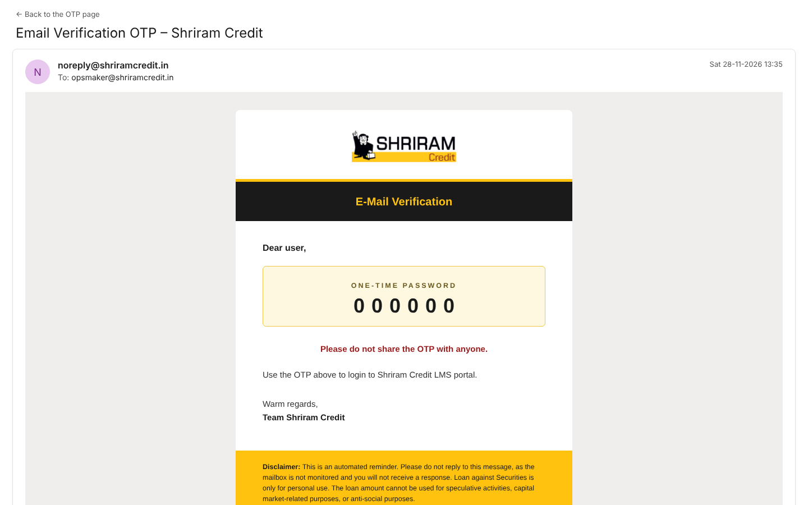 | OTP mail received by the LMS user | The system sends the OTP mail to the entered mail ID. Screen Content:
| Mail sent to: the entered mail ID Sent on: DD-MMM-YYYY; HH:MM:SS | WIP |
Module 2 – Dashboard
Dashboard · Left menu · Profile pop-up
| SL.No | Screenshot | Functionality | Description | Data Points Required | Status |
|---|---|---|---|---|---|
| 4 | 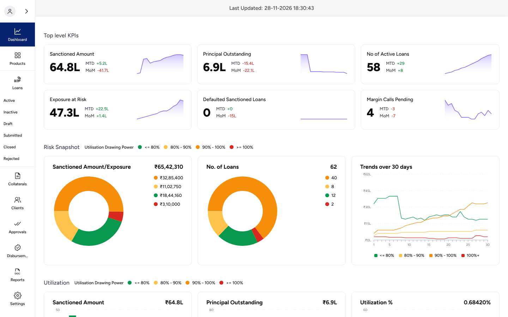 | LMS user viewing the portfolio dashboard after login | Every LMS user lands on the Dashboard after login. All values in the prototype are sample values. Screen Content:
| Dashboard data as on: Last Updated date and time | WIP |
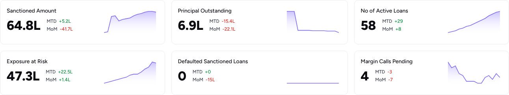 | Field Name: Top level KPIs Field Type: Cards with sparklines Action: Each card shows the value, MTD and MoM change; hovering the sparkline shows the date and value. | ||||
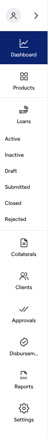 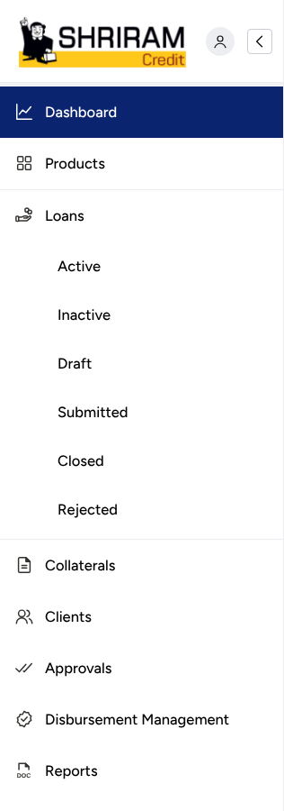 | Field Name: Left menu Field Type: Navigation Action: Dashboard, Products, Loans (Active, Inactive, Draft, Submitted, Closed, Rejected), Collaterals, Clients, Approvals, Disbursement Management, Reports, Settings. The arrow expands / collapses the menu; the open page is highlighted. A page not built yet opens the common Work in progress page. | ||||
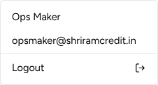 | Field Name: Profile pop-up Field Type: Pop-up Action: The profile icon opens the user’s name and mail ID and “Logout”; each row is greyed on hover; Logout returns to the Login page. |
Module 3 – Products
Products list · Select security · Product details (Active / Inactive / In Review) · Update Access Policy
| SL.No | Screenshot | Functionality | Description | Data Points Required | Status |
|---|---|---|---|---|---|
| 5 | 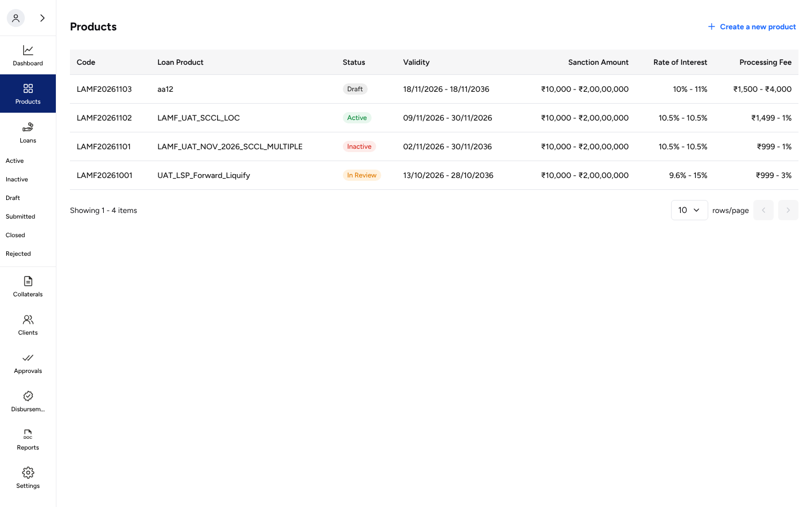 | LMS user viewing the list of loan products | Menu Products opens the list of every loan product, newest first. Screen Content:
| Code: LAMF20261103 Loan Product: TEST Product SCCL Status: Draft / In Review / Active / Inactive Validity: DD/MM/YYYY - DD/MM/YYYY Sanction Amount: ₹min - ₹max Rate of Interest: min% - max% Processing Fee: min - max (₹ or %) | WIP |
Field Name: Product list columns Field Type: Table Action: Code = LAMF + year (4 digits) + month (2 digits) + running number of the product in that month (2 digits, 3 after 99); Loan Product = the name entered (hover shows the full name); Validity = the dates chosen; Sanction Amount, Rate of Interest, Processing Fee = the min – max set in Terms (“-” until set). Condition: A Draft row opens Create a Product at its step; an In Review / Active / Inactive row opens the product details page. | |||||
Field Name: + Create a new product Field Type: CTA (Link) Action: Opens the Select security pop-up. | |||||
Field Name: Pager Field Type: Pagination Action: 10 rows per page; ‹ › move between pages (disabled when there is no other page). | |||||
| 6 | 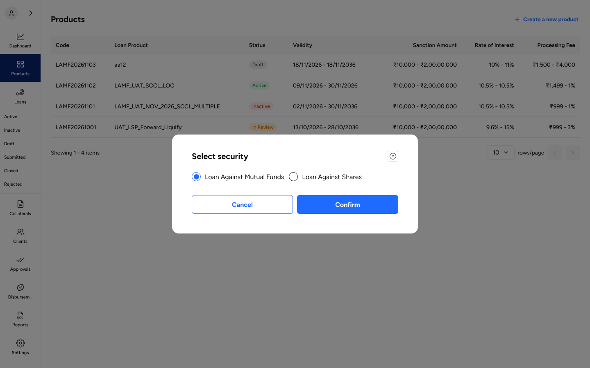 | LMS user choosing the security type of the new product | The Select security pop-up opens over the Products list. Screen Content:
| Security type:
| WIP |
Field Name: Security type Field Type: Radio buttons Prefilled Value: Loan Against Mutual Funds Action: Confirm with Loan Against Mutual Funds opens Create a Product (Module 4). Cancel / ⊗ / a click outside / Esc closes the pop-up. Note: Loan Against Shares is not built yet in the prototype. | |||||
| 7 | 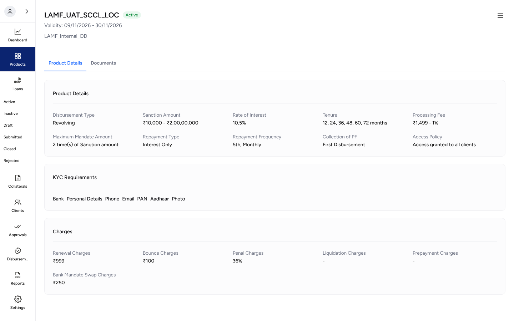 | LMS user viewing an Active product | The product details page of an Active product. Screen Content:
| All values as set in Create a Product (Module 4) | WIP |
Field Name: Product Details / Documents Field Type: Tabs Prefilled Value: Product Details Action: Switches between the product details and its documents (“No preview documents available” when there are none). | |||||
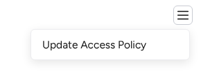 | Field Name: ≡ Menu Field Type: Icon (menu) Action: Opens “Update Access Policy”. Condition: Clickable only for an Active product; grey and not clickable for Inactive and In Review. | ||||
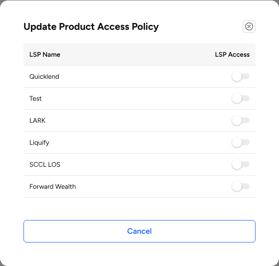 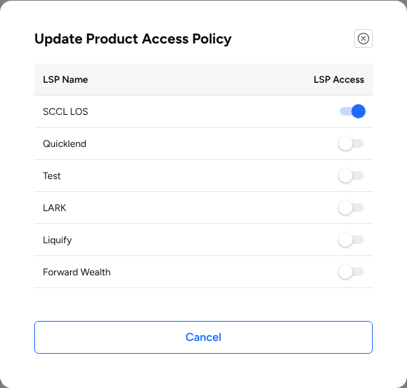 | Field Name: Update Product Access Policy Field Type: Pop-up with toggles Action: Lists the LSPs (Quicklend, Test, LARK, Liquify, SCCL LOS, Forward Wealth) with an access toggle each; a toggle saves at once; LSPs with access are listed first. Cancel / ⊗ closes. Condition: SCCL LOS on → the product is offered on the LOS Curated offers page (INT-L01). | ||||
| 7.1 | 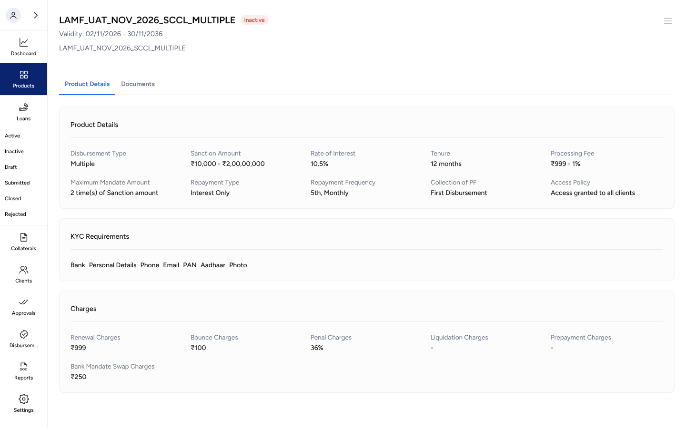 | LMS user viewing an Inactive product | Same page as Sl. No 7 with the red “Inactive” pill; the ≡ menu is grey and cannot be clicked; no Reject / Approve bar. | Status: Inactive | WIP |
| 7.2 | 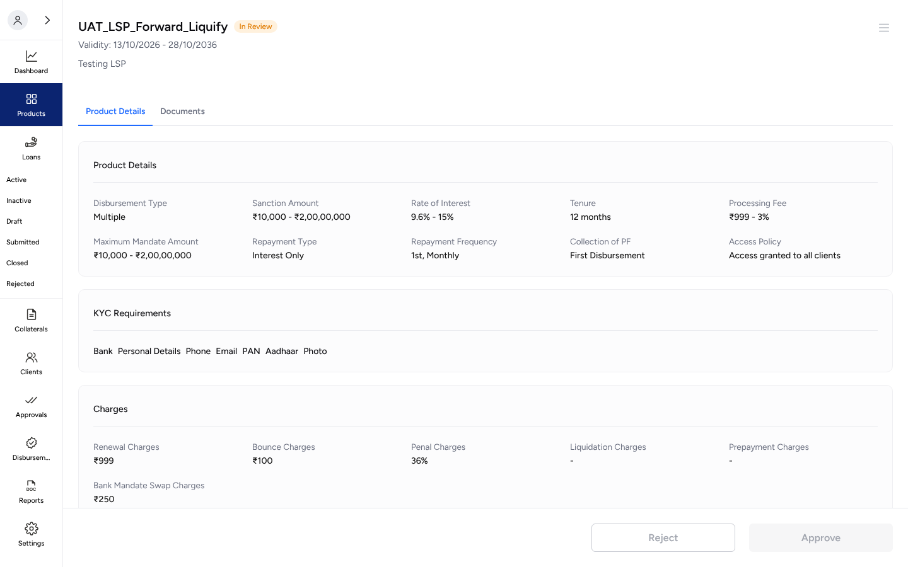 | LMS user viewing a product In Review | Same page as Sl. No 7 with the orange “In Review” pill and the Reject / Approve bar at the bottom (only for In Review). For a new product the change request block is shown on top (Sl. No 14). | Status: In Review | WIP |
Field Name: Reject / Approve Field Type: CTA (Buttons) Condition: Shown only for In Review; greyed for the user who raised the request (Sl. No 14); active for a Checker / Admin (Sl. No 15). |
Module 4 – Create a Product
Step 1 Product Details · 2 Disbursement Type · 3 Terms · 4 Charges · 5 Collections · 6 KYC
| SL.No | Screenshot | Functionality | Description | Data Points Required | Status |
|---|---|---|---|---|---|
| 8 | 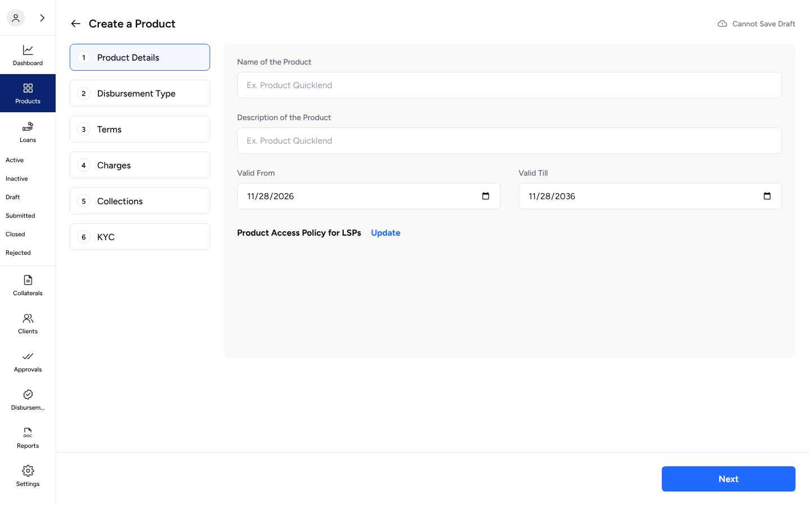 | Maker entering the product name, description and validity | Create a Product opens on step 1. The six steps are listed on the left; a finished step shows a blue tick and can be opened again. Screen Content:
| Name of the Product: TEST Product SCCL Description of the Product: This is Testing Creation Valid From: DD/MM/YYYY Valid Till: DD/MM/YYYY Draft saved on: DD-MMM-YYYY; HH:MM:SS | WIP |
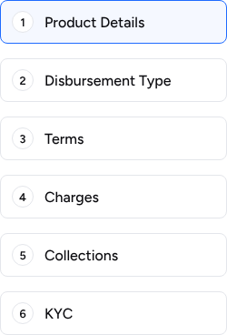 | Field Name: Steps Field Type: Step list Action: The open step has a blue border; a finished step shows a blue tick; finished steps and the next one can be clicked. | ||||
Field Name: Draft status Field Type: Text with cloud icon Action: “Cannot Save Draft” until the product is first saved (and when a step has errors); “Draft Saved” after each saved step. | |||||
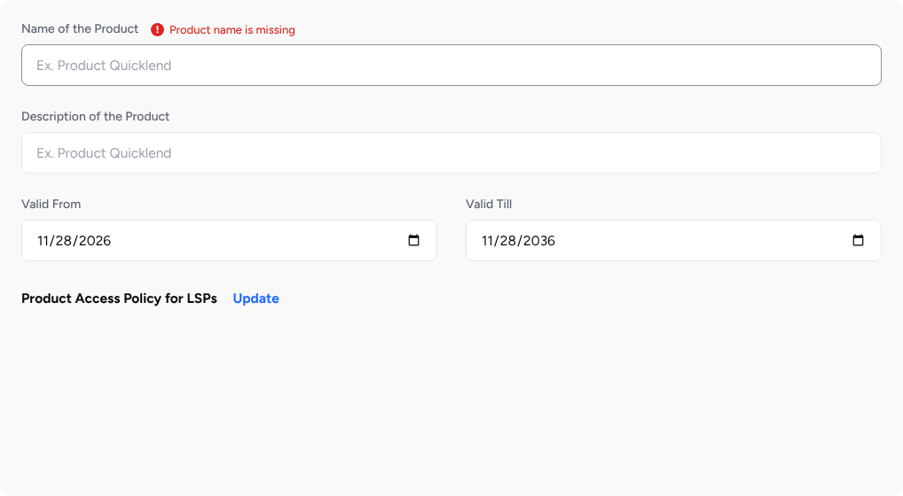 | Field Name: Name of the Product Field Type: Text Field Maximum Character: 80 Char Value Type: User inputs Input Value format: Letters, numbers and special characters Validation:
| ||||
Field Name: Description of the Product Field Type: Text Field Maximum Character: 200 Char Value Type: User inputs Input Value format: Letters, numbers and special characters Note: Not mandatory. Shown under the validity on the product page. | |||||
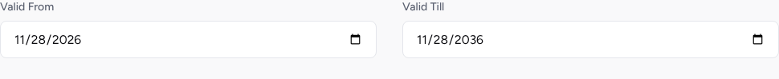 | Field Name: Valid From / Valid Till Field Type: Date pickers Input Value format: DD/MM/YYYY Prefilled Value: Valid From = today; Valid Till = today + 10 years | ||||
Field Name: Product Access Policy for LSPs – Update Field Type: Link → pop-up Action: Opens Update Product Access Policy with every LSP off (same pop-up as Sl. No 7). | |||||
Field Name: Next Field Type: CTA (Button) Action: Saves the product as a Draft – the first time it gets the next product code – and opens step 2. Note: ← Create a Product returns to Products and keeps what was typed in a saved draft. | |||||
| 9 | 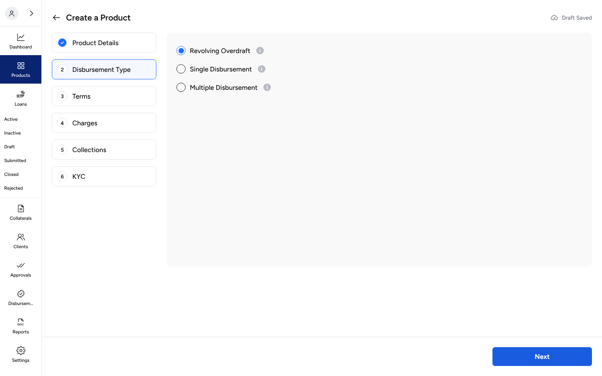 | Maker choosing the disbursement type | Step 2 – one disbursement type per product. Screen Content:
| Disbursement Type:
| WIP |
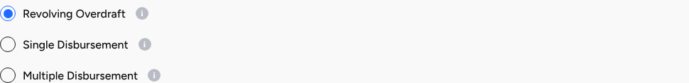 | Field Name: Disbursement Type Field Type: Radio buttons Prefilled Value: Revolving Overdraft | ||||
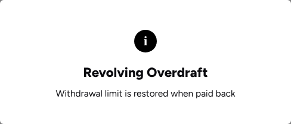 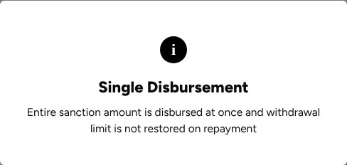 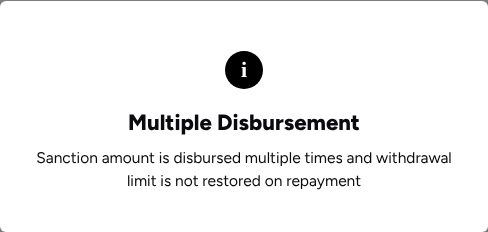 | Field Name: (i) Field Type: Icon → info pop-up Action: Opens the explanation of that type; a click outside or Esc closes it; it does not change the selection. | ||||
| 10 | 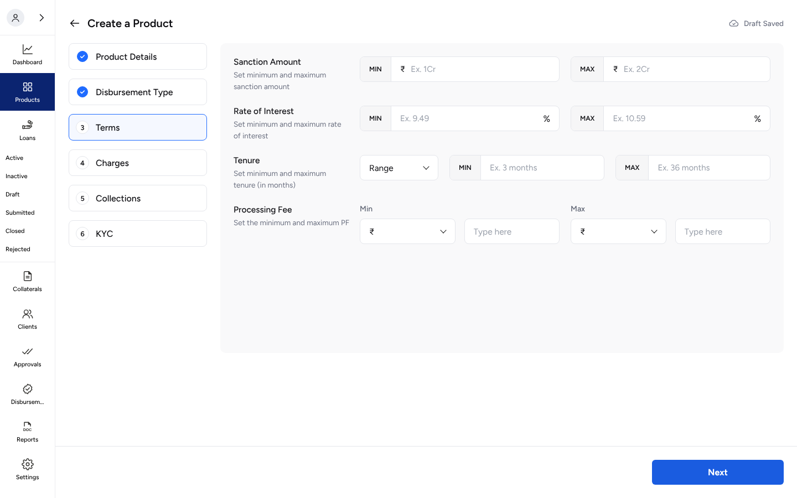 | Maker entering the sanction amount, rate of interest, tenure and processing fee ranges | Step 3 – every value is entered as a minimum and a maximum. Screen Content:
| Sanction Amount: ₹10,000 - ₹2,00,00,000 Rate of Interest: 11% - 11% Tenure type: Range / Discrete Tenure: 12 - 36 months, or 12, 24, 36 Processing Fee: ₹1,499 - 1% | WIP |
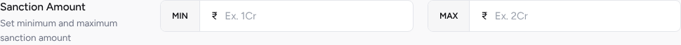 | Field Name: Sanction Amount – MIN / MAX Field Type: Number fields (₹) Value Type: User inputs Input Value format: Numeric Validation:
| ||||
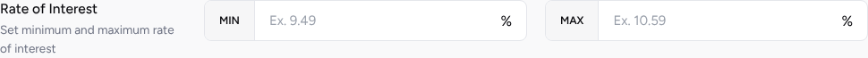 | Field Name: Rate of Interest – MIN / MAX Field Type: Number fields (%) Value Type: User inputs Input Value format: Numeric with decimals Validation:
| ||||
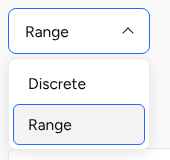 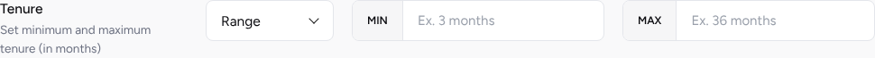 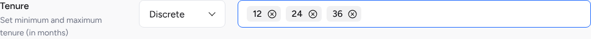 | Field Name: Tenure Field Type: Drop-down + fields Prefilled Value: Range Action: Range: MIN and MAX months – the LOS offers every month in between. Discrete: type a month and press Enter to add it as a chip (⊗ or Backspace removes; numbers only, no duplicates) – the LOS offers only these months. Validation:
| ||||
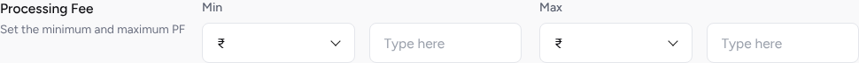 | Field Name: Processing Fee – Min / Max Field Type: Drop-down (₹ / %) + number field Prefilled Value: ₹ Validation:
| ||||
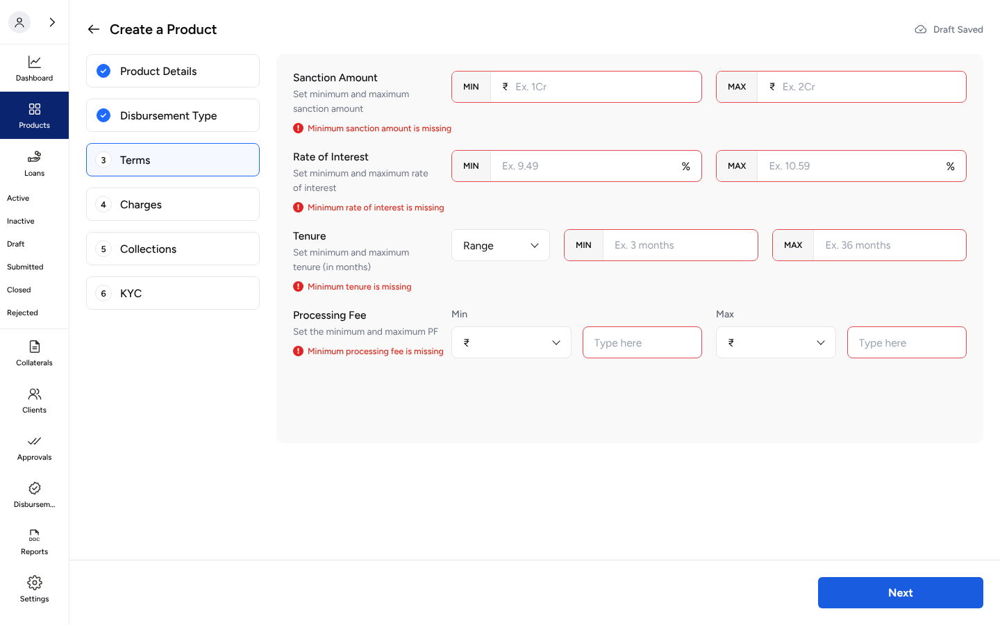 | Field Name: Next Field Type: CTA (Button) Action: Moves to step 4 only when every box is filled; empty boxes get a red border and the message under their row. | ||||
| 11 | 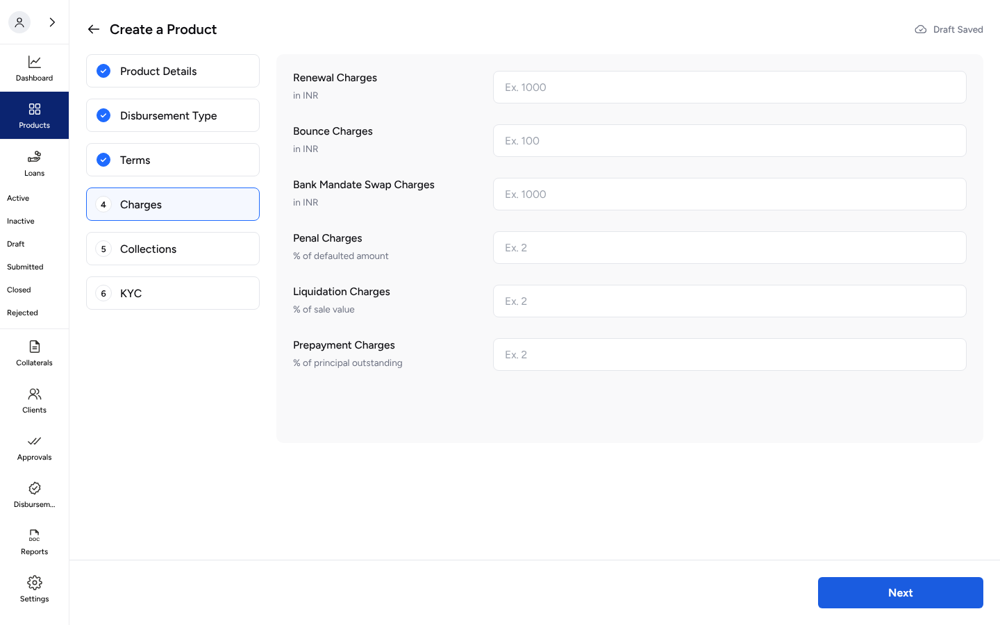 | Maker entering the charges | Step 4 – every charge is mandatory; 0 is accepted. Screen Content:
| Renewal Charges: ₹999 Bounce Charges: ₹100 Bank Mandate Swap Charges: ₹250 Penal Charges: 36% Liquidation Charges: 0% Prepayment Charges: 0% | WIP |
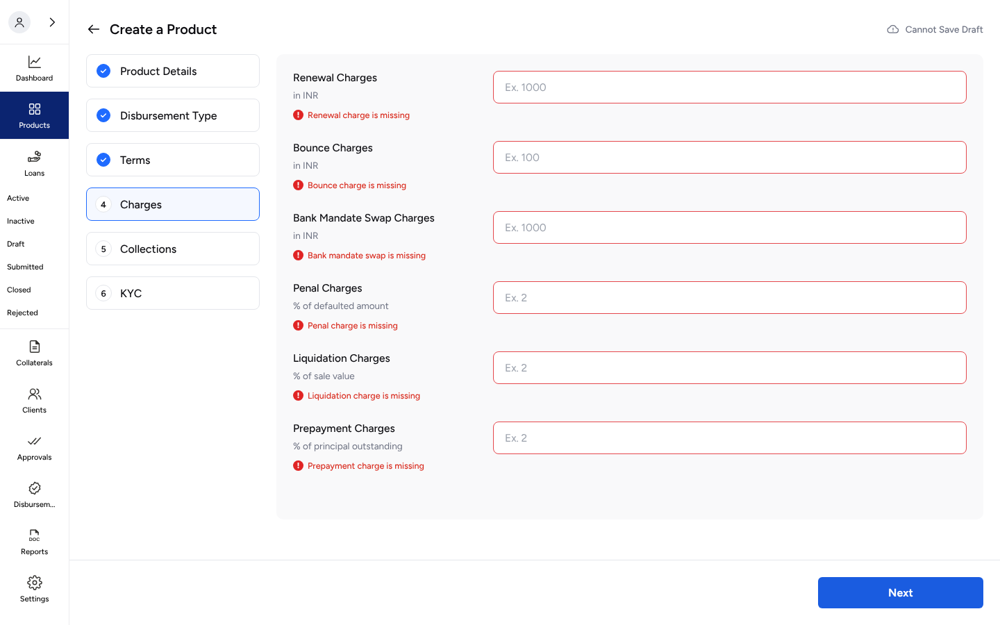  | Field Name: Charge fields Field Type: Number fields Value Type: User inputs Input Value format: Numeric (₹ for the INR charges, % for the others) Validation:
| ||||
| 12 | 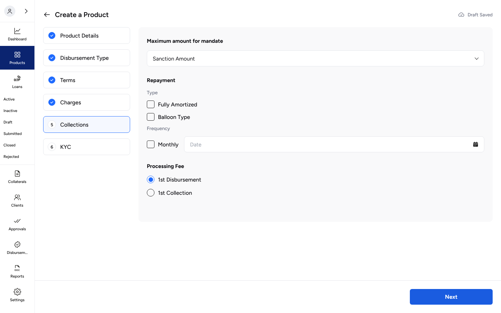 | Maker setting the mandate, repayment and processing fee collection | Step 5. Screen Content:
| Maximum amount for mandate: Sanction Amount / N time(s) of Sanction amount / ₹ amount Repayment Type: Fully Amortized, Balloon Type Repayment Frequency: 5th, Monthly Collection of PF: 1st Disbursement / 1st Collection | WIP |
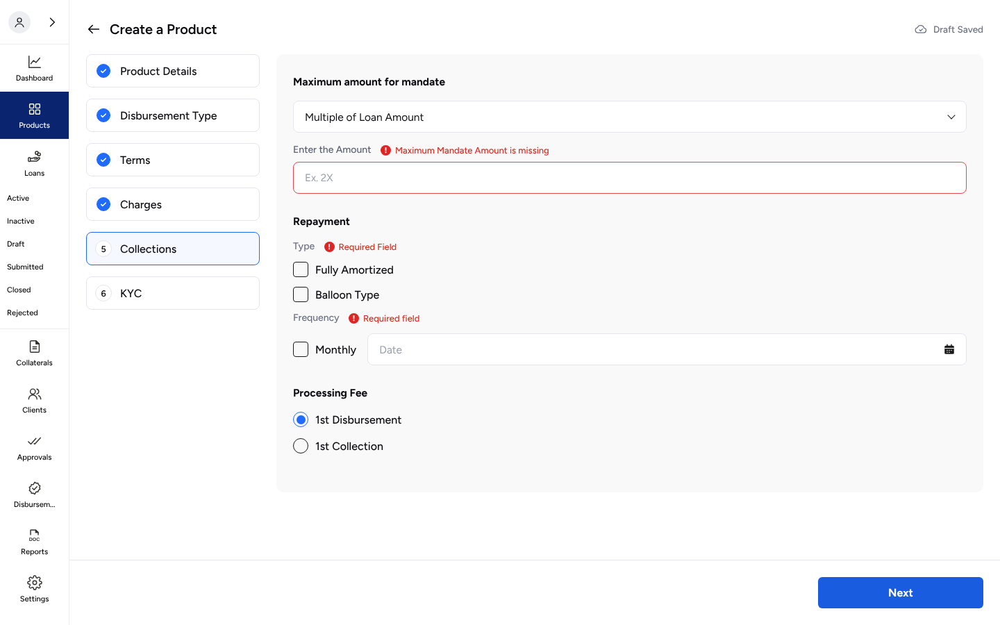 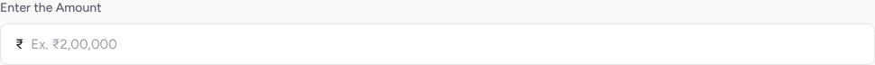 | Field Name: Maximum amount for mandate Field Type: Drop-down + amount field Prefilled Value: Sanction Amount Pending · LP-04 Action: Multiple of Loan Amount → “Enter the Amount” (Ex. 2X); Absolute Value → ₹ amount (Ex. ₹2,00,000). Validation:
| ||||
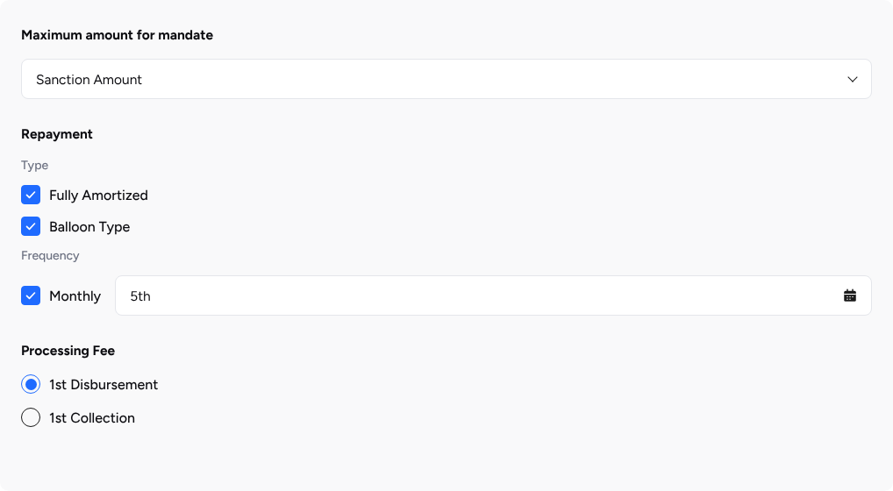 | Field Name: Repayment – Type Field Type: Check boxes Action: Fully Amortized and / or Balloon Type (shown as “Interest Only” on the product page and in the LOS). Validation:
| ||||
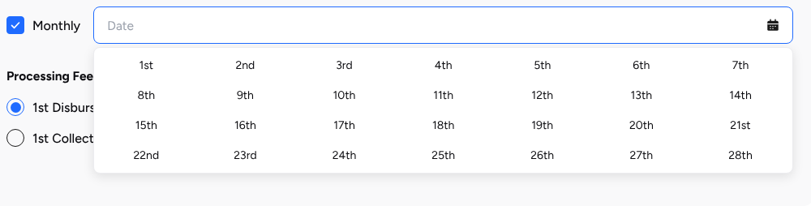 | Field Name: Repayment – Frequency Field Type: Check box + day picker Input Value format: 1st – 28th Pending · LP-04 Validation:
| ||||
Field Name: Processing Fee Field Type: Radio buttons Prefilled Value: 1st Disbursement Action: When the processing fee is collected: 1st Disbursement or 1st Collection. | |||||
| 13 | 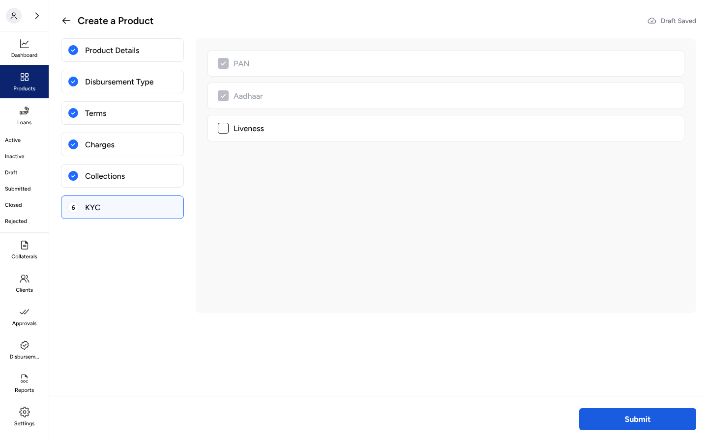 | Maker choosing the KYC requirements and submitting the product | Step 6 – the last step; the button reads Submit. Screen Content:
| Liveness required:
Submitted on: DD-MMM-YYYY; HH:MM:SS | WIP |
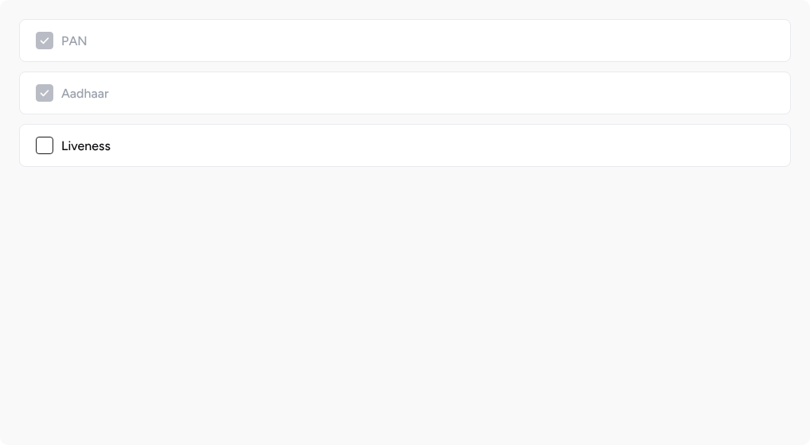 | Field Name: KYC requirements Field Type: Check boxes Prefilled Value: PAN and Aadhaar ticked and locked | ||||
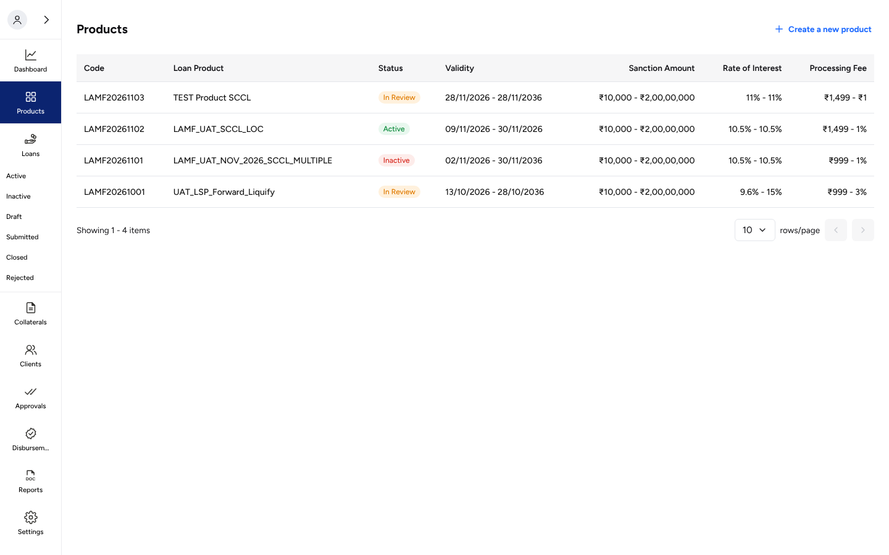 | Field Name: Submit Field Type: CTA (Button) Action: Shows “Product creation successful”, sets the product In Review, raises a “Product creation” change request (Request ID) for approval and returns to Products. |
Module 5 – Approvals
Change request on the product page (maker) · Approvals list · Checker approval
| SL.No | Screenshot | Functionality | Description | Data Points Required | Status |
|---|---|---|---|---|---|
| 14 | 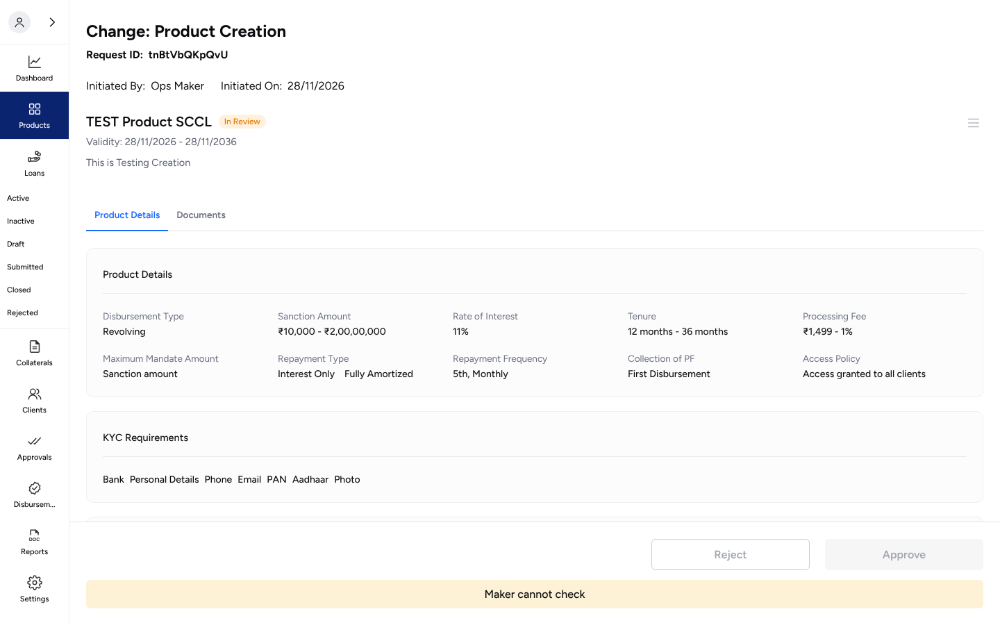 | Maker viewing the product sent for approval | A submitted product shows its change request on top. The maker cannot approve their own request. Screen Content:
| Request ID: tnBtVbQKpQvU Initiated By: Ops Maker Initiated On: DD/MM/YYYY | WIP |
Field Name: Change: Product Creation Field Type: Text block Action: Request ID, who raised it and when. | |||||
Field Name: Reject / Approve Field Type: CTA (Buttons) Condition: Greyed for the user who raised the request, with the yellow bar “Maker cannot check”. | |||||
| 15 | 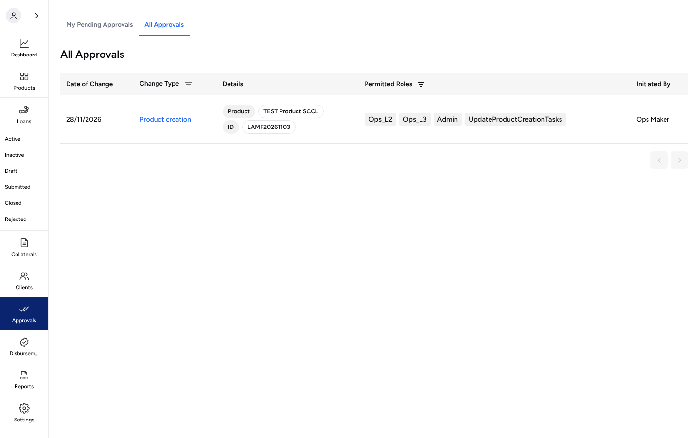 | Checker / Admin viewing the change requests waiting for approval | Menu Approvals. Screen Content:
| Date of Change: DD/MM/YYYY Change Type: Product creation Product: TEST Product SCCL ID: LAMF20261103 Initiated By: Ops Maker | WIP |
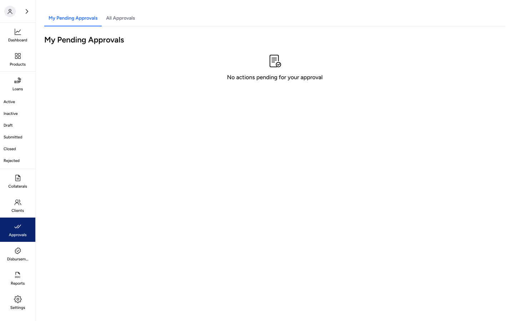 | Field Name: My Pending Approvals Field Type: Tab Condition: Lists the requests the logged-in Checker / Admin can approve – never their own; a Maker sees “No actions pending for your approval”. | ||||
Field Name: Change Type filter Field Type: Filter list (check boxes) Prefilled Value: All ticked Action: All, Product creation, Loan account opening, Loan lodgement, Disbursement, Foreclosure, Physical loan agreement, Physical mandate, Upsert asset ltv bulk, Upsert asset ltv, Pledging, Pledge release, Liquidation, Loan roi change, Loan email change, Loan mobile change, Update correspondence address, Loan transaction review, Collateral sale price confirmation. Unticking hides that type; All ticks / clears every type. Note: Permitted Roles filter Pending · LP-05 | |||||
Field Name: Product creation Field Type: Link Action: Opens the request – the product page with the change block (Sl. No 16). | |||||
| 16 | Checker approving the new product | The checker opens the request from Approvals (or the product page) and approves it. Screen Content:
| Note: Test Approved File: PDF / PNG / JPG (optional) Approved by: Ops Checker Approved on: DD-MMM-YYYY; HH:MM:SS Status after approval: Active | WIP | |
Field Name: Upload a file Field Type: File drop / click Input Value format: PDF, PNG or JPG; max 5 MB Note: Not mandatory. | |||||
Field Name: Add a note Field Type: Text Field Maximum Character: 500 Char Value Type: User inputs Validation:
| |||||
Field Name: Confirmation pop-up Field Type: Pop-up Action: No / ⊗ / Esc closes it; Yes completes the action. | |||||
Field Name: Approve Field Type: CTA (Button) Action: Yes → the product becomes Active, the request leaves Approvals and Approvals shows “Approved successfully”. | |||||
Field Name: Reject Field Type: CTA (Button) Action: Same note check and confirmation. Result after Yes Pending · LP-06 |
Module 6 – Loans
Loans menu · Active loans (LSP filter, All / Shortfall / In Default)
| SL.No | Screenshot | Functionality | Description | Data Points Required | Status |
|---|---|---|---|---|---|
| 17 | Ops user viewing the active loans | Menu Loans → Active. “Loans” itself cannot be clicked – only its sub-items Active, Inactive, Draft, Submitted, Closed and Rejected; the open sub-item is navy. Screen Content:
| LAN: SCCLMF20261100043 Product Id: LAMF20261102 Risk: No Risk Client Name: (sample) PAN: (sample) Sanction Amount: ₹2,00,000 Rate of Interest: 10.5% Start / End Date: DD/MM/YYYY LSP: SCCL LOS | WIP | |
Field Name: Loans menu Field Type: Menu group Condition: “Loans” is a heading only (not clickable); the six sub-items open their lists. | |||||
Field Name: LSP Field Type: Drop-down Prefilled Value: “Select a value” (all loans) Action: All, Quicklend, Test, LARK, Liquify, SCCL LOS, Forward Wealth – lists only the loans of that LSP; All lists every loan. | |||||
Field Name: All / Shortfall / In Default Field Type: Chips Prefilled Value: All Action: All – every active loan; Shortfall – loans in shortfall (URL ?tab=1); In Default – loans in default (?tab=2). Nothing to show → icon and “No shortfall application”. | |||||
Field Name: Loans table Field Type: Table Action: Scrolls sideways. Risk “No Risk” in green bold; Status pill “Active”; a long Client Name ends with “…”. | |||||
Integration RequirementsiHow to read the columnsID Reference number Integration Which system is affected Purpose Why Trigger When it happens Input Data used Expected Output What the other system shows Success Behaviour What the user sees Failure Behaviour If it fails
| ID | Integration | Purpose | Trigger | Input | Expected Output | Success Behaviour | Failure Behaviour |
|---|---|---|---|---|---|---|---|
| INT-L01 | LOS – Curated offers | Offer an LMS product to LOS customers | Product Active and “SCCL LOS” switched on in Update Product Access Policy (Sl. No 7) | Product terms (rate, tenure, PF) | An offer card for the product on the Curated offers page (Interest Rate = minimum rate, Tenure = its tenure) | The customer can start an application on that product | Pending · LP-07 |
| INT-L02 | LOS – Application summary | Apply the product rules to the application | Customer starts the application from that offer | Tenure (Range / Discrete), Repayment Type, Disbursement Type | Tenure drop-down with every month min–max (Range) or the set months (Discrete); Repayment Type drop-down when both types are allowed; Revolving shown as “Line of Credit” | Customer picks tenure / repayment type | Pending · LP-07 |
Pending Clarifications9
| ID | Module | Clarification Required |
|---|---|---|
| LP-01 | Module 1 | Sl. No 1 – exact message when an SCCL mail ID that is not an LMS user tries to log in (prototype: “This email ID does not have access to the LMS.”). |
| LP-02 | Module 1 | Sl. No 2 – Resend OTP: timer length, number of resends, OTP validity and wrong-OTP limit. |
| LP-03 | Module 4 | Sl. No 10 – wording of “Maximum … is missing” and “Tenure is missing”; message when MIN is more than MAX. |
| LP-04 | Module 4 | Sl. No 12 – default of “Maximum amount for mandate”; days offered in the Date picker; are the Repayment check boxes empty for a new product? |
| LP-05 | Module 5 | Sl. No 15 – Permitted Roles filter list; does an approved request stay in All Approvals (with a status)? |
| LP-06 | Module 5 | Sl. No 16 – Reject: message after Yes and the product status after rejection. |
| LP-07 | LOS | INT-L01 / L02 – default tenure on the LOS Application summary (prototype: the maximum); Credit Limit and Processing Fee on the LMS product’s offer card. |
| LP-08 | Module 6 | Sl. No 17 – empty text of the In Default chip (prototype: “No in default application”); Risk Level values; what “Generated” shows. |
| LP-09 | Module 6 | Sl. No 17 – the loan page opened from a row (screenshot to be shared; prototype: Work in progress). |
Completed Clarifications0
| None yet. |
Pending Changes0
| Nothing pending. |